The State of FP8 KV-Cache and Attention Quantization in vLLM
Introduction
Long-context LLM serving is increasingly memory-bound: for standard full-attention decoders, the KV cache often dominates GPU memory at 128k+ contexts, and each decode step must read a large fraction of that cache. Halving KV-cache storage with FP8 can therefore translate into substantially higher concurrency or longer supported contexts at the same hardware cost, provided accuracy holds up.
vLLM's --kv-cache-dtype fp8
flag quantizes the KV-cache and runs the entire attention computation
(the QK and ScoreV matrix multiplications) in FP8 (e4m3 is the format
used throughout this post). This feature has been available in vLLM for
some time, but how does it perform under stress tests across both
prefill-heavy and decode-heavy workloads? We conducted a comprehensive
validation across decoder-only and MoE models, and across Hopper and
Blackwell architectures. We identified and fixed critical accuracy and
performance issues in the Flash Attention 3 (FA3) backend (see example
in Figure 1). On the validated paths in this post, it preserves
near-baseline accuracy while reducing decode cost and KV-cache memory
usage. The main caveats are hybrid-attention models with small
sliding-window layers, where skipping those layers is often better, and
large-head-dimension models (head_dim = 256),
where prefill can still regress. Furthermore, for head dimensions 64 and
128, FP8 format also offers speedups both on prefill and decoding. For
memory-bound decoding the per-token cost of the KV cache can be reduced
to 54% of its BF16 counterpart in the best cases. For large head
dimensions like 256, FP8 also reduces the ITL; however, the default
prefill performance is currently still slightly worse than for BF16.
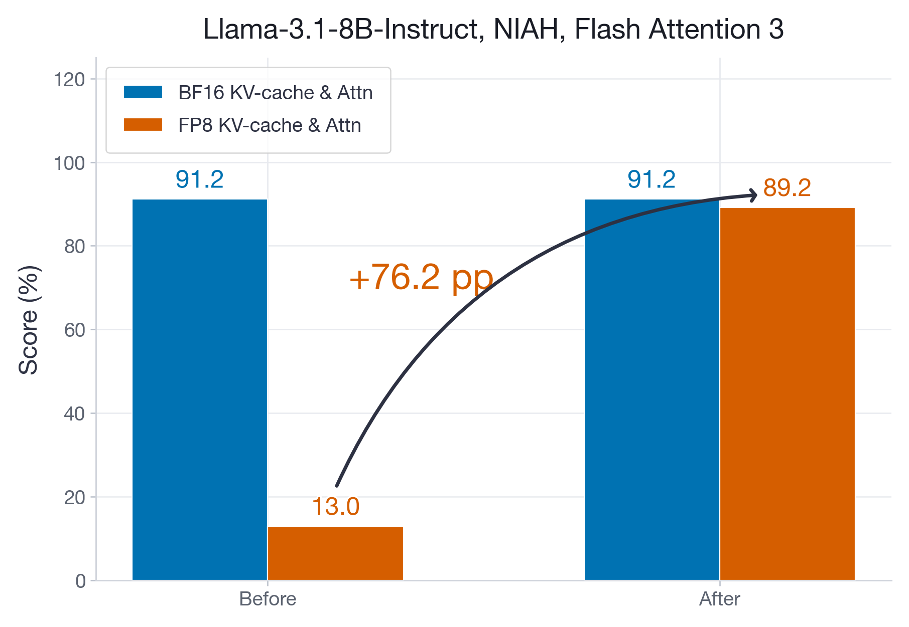
Table of Contents
- The Problems We Found
- Kernel and vLLM Improvements
- Performance Benchmarking
- Accuracy Benchmarking
- When to Avoid FP8 KV-Cache
Quick start:
# FP8 KV-cache for all layers
vllm serve meta-llama/Llama-3.1-8B --kv-cache-dtype fp8
# FP8 KV-cache, skipping sliding-window layers (recommended for hybrid-attention models)
vllm serve gpt-oss-20b --kv-cache-dtype fp8 --kv-cache-dtype-skip-layers sliding_windowThe Problems We Found
Although --kv-cache-dtype fp8
has been available in vLLM for some time, our stress tests revealed two
categories of issues:
Accuracy: On Hopper GPUs, the FP8 Flash Attention 3 kernel suffered from accumulation precision loss at long contexts. On a 128k needle-in-a-haystack task, FP8 accuracy dropped from 91% (BF16 baseline) to just 13% — a regression traced to imprecise FP32 accumulation in the Tensor Cores (see the two-level accumulation fix below).
Performance: The FP8 ITL slope for models with sliding-window attention layers (e.g., gpt-oss-20b) was nearly identical to BF16 (96% of BF16 slope), meaning users gained almost no decoding speedup despite halving memory. The break-even point exceeded 700k tokens — well beyond most practical context lengths.
The following section describes the improvements we shipped to address these issues.
Kernel and vLLM Improvements
During our investigations, we shipped various improvements to enhance the flexibility of the quantization schemes, fix accuracy issues and improve the performance. We briefly describe those here.
Two-level accumulation: Hopper's FP8 Tensor Cores
are documented as accumulating into FP32 registers, but in practice the
intermediate accumulation loses precision when the contraction dimension
is large — a known hardware-level issue also encountered during
DeepSeek-V3 training (see Figure 7(b) in the DeepSeek-V3 Technical Report). When the
contraction dimension reaches 100K or more, this imprecise accumulation
causes drastic numerical errors. Concretely, in long context inference,
during the Softmax(AttnScore) * V
matmul, the contraction dimension corresponds to the context lengths.
Empirically, we found that this can lead to accuracy regressions from
91% (BF16) to 13% (FP8) on a long-context needle-in-a-haystack task. To
mitigate this, we added a two-level accumulation strategy (see SageAttention2) that writes the partially
accumulated results into an actual FP32 register (flash-attention#104), which brought the
FP8 accuracy back to 89%. On the downside, this two-level accumulation
increases the register pressure and causes slowdowns during prefill. We
partially addressed this through optimized tiling configurations (flash-attention#125), however, for head
dimensions larger than 128, the prefill performance remains behind
BF16.
Skipping of Layers: Earlier on, vLLM only allowed
users to choose a single numeric format for all Attention Layers. We
added --kv-cache-dtype-skip-layers
(vllm#33695) to allow for hybrid settings.
Models like GPT-OSS use some layers with sliding window attention, where
tokens attend to a fixed window size, for example 128 tokens. Here FP8
overheads cannot be amortized. Therefore, keeping those layers in BF16
is actually faster than quantizing them, see our empirical results
below. Furthermore, if some layers are particularly sensitive to
quantization, this feature allows skipping those layers.
Per-Head Scales: Flash Attention 3 kernel allows
specifying an array of scales for FP8 quantization of the attention
operation, with each scale corresponding to one KV-head. Enabling this
feature in vLLM required generalizing support for static quantization
for all group-shapes (vllm#30833) and expanding the scope of the
reshape_and_cache_flash
kernel (vllm#30141) to account for an array of
scales instead of a single scalar.
Query Quantization Fusion: We moved query
quantization out of the attention backend into a simple torch
implementation that torch.compile
can fuse into surrounding operations, eliminating the fixed per-token
overhead (vllm#24914).
Optimized FA3 FP8 tile sizes: We tuned the prefill
tiling configuration for head_dim = 64
and head_dim = 128
to reduce register spills introduced by two-level accumulation (flash-attention#125). Furthermore, we
added specifically tuned configurations for memory-bound decoding
workloads that drastically reduce the context-dependent increase in ITL,
aka the slope (flash-attention#96, flash-attention#91).
Performance Benchmarking
Attention can be a significant cost during decoding for long-context LLM serving. Every generated token must attend over the full KV-cache, so inter-token latency (ITL) grows linearly with input length. Quantizing the KV-cache from BF16 to FP8 halves the memory per cached token and thus halves the memory traffic per attention step, which should translate directly into lower ITL slopes. Since Hopper and Blackwell GPUs offer twice as many FLOPs for FP8 as for BF16, ideally, we would also expect prefill speedups. In practice, however, these gains are not always realized out of the box, as we demonstrate in the following sections.
Single Request Benchmarking
To cleanly understand the attention behavior, we first present benchmarks with concurrency 1, and later for batched inference. For concurrency 1, the Inter-Token-Latency (ITL) and the Time-to-First-Token (TTFT) are completely separated, and we can fit a linear model to ITL vs. input length
ITL = slope × input_len + intercept
and a quadratic to TTFT:
TTFT = a × input_len² + b × input_len + c
The ITL slope directly reflects per-token attention cost — a lower slope means each additional cached token adds less latency, which is critical for long-context workloads. The break-even point is the context length at which FP8 ITL drops below BF16 ITL; beyond this point, FP8 is strictly faster for decoding. The quadratic TTFT model captures the compute-bound prefill phase, where cost grows quadratically with sequence length due to the self-attention over the input.
All Hopper experiments run on a single H100 GPU using FlashAttention-3 (via the vLLM fork), which provides native FP8
KV-cache support with online softmax rescaling. We use a single GPU,
vllm bench serve
with concurrency 1, 128 output tokens, and input lengths swept from 256
to 125k tokens.
Figure 2 shows results for the Llama-3.1-8B model.
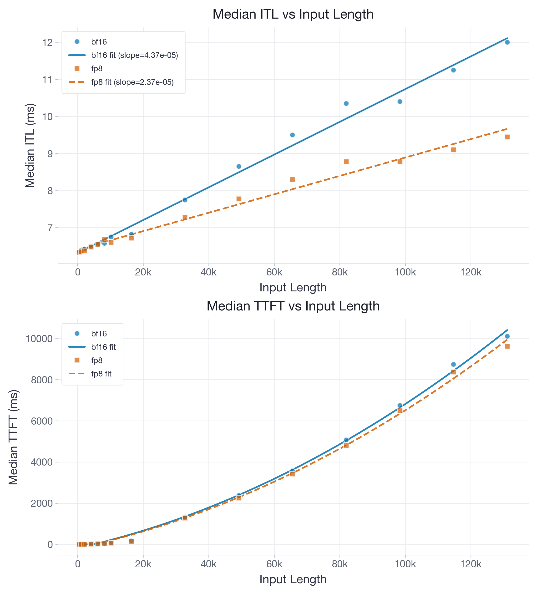
The fitted ITL slope drops from 4.37e-05
to 2.37e-05
ms/token, while the intercept changes only from 6.44
to 6.58
ms. The slope ratio of FP8 is at 54% of BF16, which is close to optimal,
and the intercept gap is just 0.14 ms. This pulls the break-even point
down to ~7k tokens. Furthermore, even with the enabled two-level
accumulation we obtain slight TTFT speedups of FP8 for long
contexts.
Next, we move to gpt-oss-20b, a 20B-parameter model with a hybrid
attention architecture featuring both global and sliding-window layers
(window size 128). Sliding-window layers have bounded KV-cache sizes, so
quantizing them yields diminishing returns at long contexts. With --kv-cache-dtype-skip-layers sliding_window,
we keep those layers in BF16 while quantizing only the global attention
layers to FP8. Figure 3 reports results for the model with KV-cache in
BF16, FP8, and FP8 with skipping of the sliding-window layers.
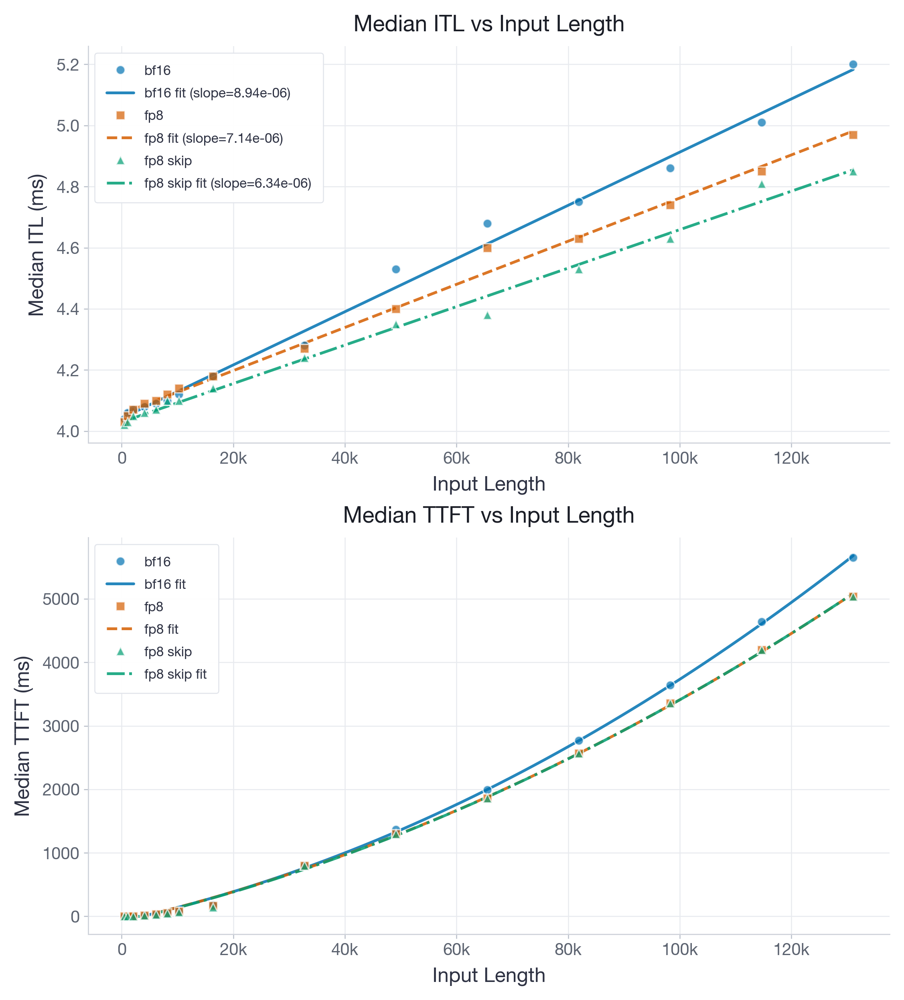
The fitted ITL slope drops from 8.94e-06
ms/token in BF16 to 7.14e-06
in full FP8 and 6.34e-06
in FP8 skip-SW, while intercepts remain tightly clustered between 4.03
and 4.07
ms. The FP8 slope is at 80% (full FP8) and 71% (skip-SW) of BF16 which
makes FP8 an attractive option. Before our improvements, the BF16 and
FP8 slopes were nearly identical.
The skip-sliding-window variant is the clear winner: by keeping the bounded sliding-window layers in BF16 (where quantization adds constant overhead but no memory savings at long contexts), it achieves the lowest slope with very little intercept penalty. We thus recommend using this variant.
Practical takeaway: for long-context decode-heavy serving, FP8 is most compelling when KV-cache traffic dominates, and on H100 it is already clearly beneficial for Llama-class models and for hybrid models once small sliding-window layers are skipped.
The table below summarizes the single-request performance before and after our improvements, showing a significant reduction in break-even points and ITL slopes.
Table 3: Summary of the improvements across both analyzed models and KV-cache variants.
| Model | Version | FP8 variant | Break-even (tokens) | FP8 slope (% of BF16) |
|---|---|---|---|---|
| Llama-3.1-8B | before (v0.10.2) | FP8 | 24,889 | 63% |
| Llama-3.1-8B | after (v0.19.1) | FP8 | 7,010 | 54% |
| gpt-oss-20b | before (v0.10.2) | FP8 | 741,565 | 96% |
| gpt-oss-20b | after (v0.19.1) | FP8 | 22,109 | 80% |
| gpt-oss-20b | after (v0.19.1) | FP8 skip-SW | 7,659 | 71% |
Throughput under Load
The sweep above isolates per-token attention cost at concurrency 1. To measure end-to-end serving performance under realistic conditions, we run a throughput benchmark: 150 requests at concurrency 8, each with ~20k input tokens and ~2k output tokens (±15% variance). We report results in Table 4 and Table 5.
Table 4: Performance results for Llama-3.1-8B model under heavy throughput load and KV-cache in BF16 and FP8 formats. FP8 shows 14.9% higher output throughput, 13.0% faster total runtime, and 14.8% lower median ITL.
| Config | Median TTFT (ms) | Median ITL (ms) | Total duration (s) | Output tok/s |
|---|---|---|---|---|
| BF16 | 763.6 | 15.18 | 672.6 | 450.3 |
| FP8 | 742.8 | 12.93 | 585.2 | 517.5 |
Table 5: Performance results for gpt-oss-20b model under heavy throughput load and KV-cache in BF16, FP8, and FP8 with skipping of sliding window. FP8 skip-SW shows 4.8% higher output throughput, 4.6% faster total runtime, 4.8% lower median ITL.
| Config | Median TTFT (ms) | Median ITL (ms) | Total duration (s) | Output tok/s |
|---|---|---|---|---|
| BF16 | 468.9 | 8.09 | 364.2 | 831.6 |
| FP8 | 451.7 | 7.90 | 355.1 | 853.0 |
| FP8 skip-SW | 456.4 | 7.70 | 347.4 | 871.8 |
These throughput results confirm that the single-request ITL improvements translate into real serving gains under load. For Llama-3.1-8B, the 54% ITL slope reduction at concurrency 1 translates to a 14.9% output throughput increase at concurrency 8 — FP8 not only decodes each token faster, but the 2x memory reduction also allows the scheduler to pack more concurrent requests. For gpt-oss-20b, the gains are smaller (4.8%) because the model's sliding-window layers limit the memory savings; the skip-SW variant recovers the most by avoiding the overhead on layers that don't benefit from quantization.
Note that these benchmarks use concurrency 8 with ~20k-token inputs, which is moderately heavy. At higher concurrencies or longer contexts, the FP8 memory savings become even more impactful since BF16 would hit OOM or require more aggressive KV-cache eviction.
Limitations for Large Head Dimensions
With flash-attention#104 we enabled two-level accumulation by default to ensure the highest quality of models and prevent users from getting unexpected accuracy drops. However, for large head dimensions, this leads to a TTFT that is slower than BF16.
To illustrate this, Figure 4 reports results for gemma-4-E2B on H100,
which uses head_dim = 256.
It also has three out of four layers with a sliding window with size
512:
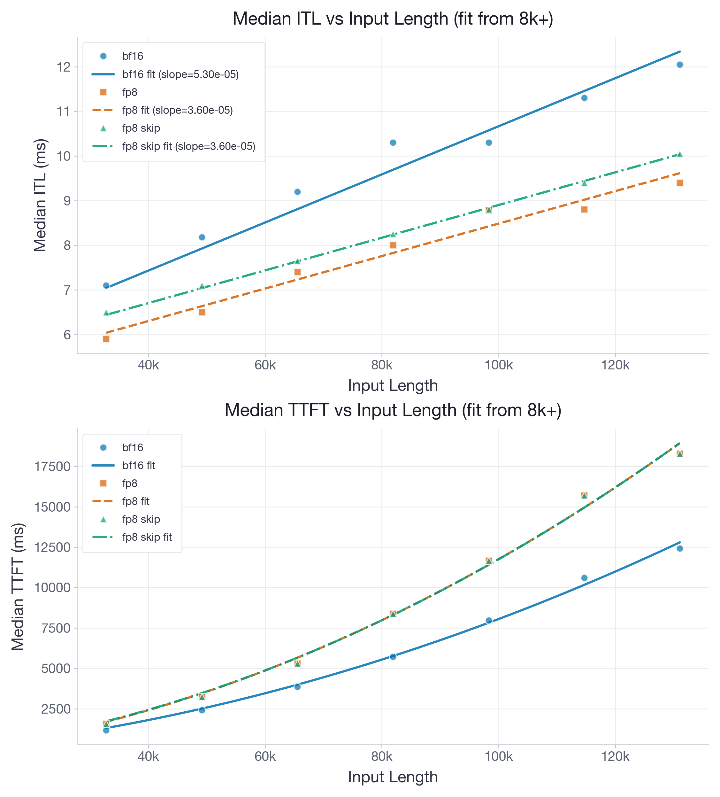
For gemma-4-E2B, the ITL slope drops from 5.30e-05
to 3.60e-05
ms/token, while the TTFT quadratic coefficient rises from 6.93e-07
to 1.12e-06
ms/token². FP8 therefore delivers a clear decode win (slope at 68% of
BF16) across the measured range. Furthermore, since gemma-4-E2B's
sliding window size (512) is 4x larger than gpt-oss-20b's (128), there
is enough data within each window to amortize the FP8 overhead, making
it worth quantizing the sliding-window layers as well. This gives a
constant offset against skipping the sliding window layers. However, the
TTFT quadratic coefficient is ~1.6x larger for FP8 than BF16, meaning
prefill becomes significantly slower at long contexts due to
the register pressure from two-level accumulation at head_dim = 256.
There are currently two ways to address this: 1) users can disable the two-level accumulation for improved performance. However, we recommend doing extensive accuracy testing on the relevant workloads in this case. 2) It is possible to have the accumulation only happen every N-steps instead of every step. A functional implementation can be found in this open PR flash-attention#122 and recovers speedups for prefill. Note that, especially the first option would also give larger prefill speedups for head dimensions 64 and 128.
Performance with FlashInfer on Blackwell (B200) GPUs
While most of our performance improvements targeted H100 and Flash-Attention 3, we also provide benchmarks on B200 with the FlashInfer backend for completeness. Note that on B200, the accumulation issue is fixed, hence no explicit two-level accumulation is needed. Figures 5 and 6 visualize performance of Llama-3.1-8B and gpt-oss-20b, respectively.
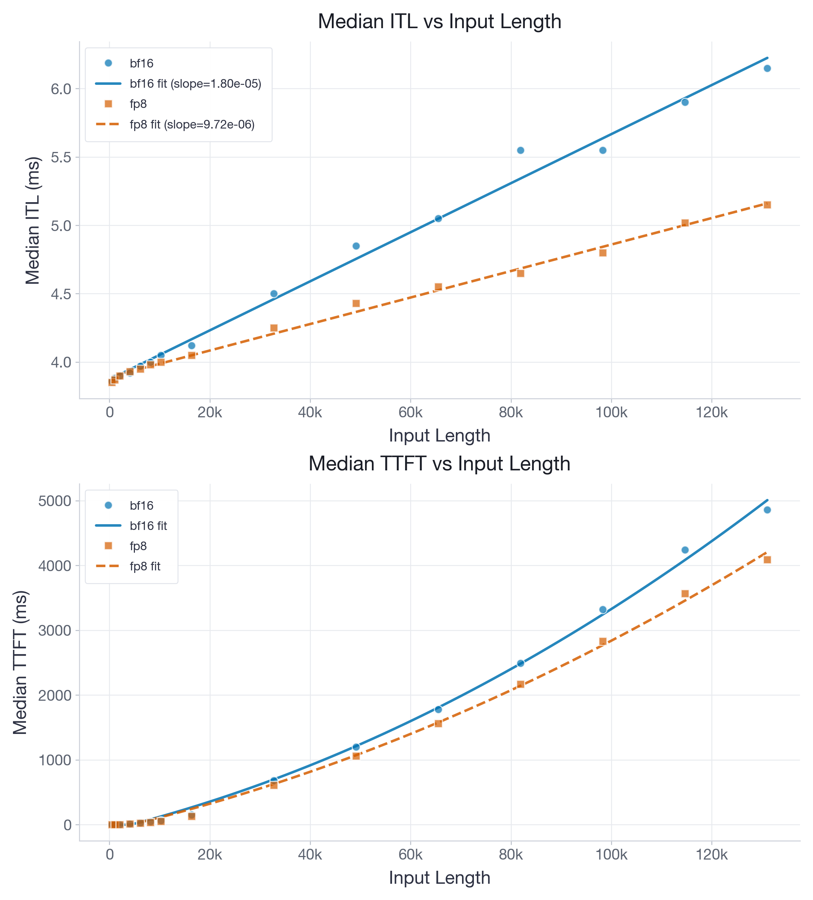
For Llama-3.1-8B on B200, the fitted ITL slope drops from 1.80e-05
to 9.72e-06
ms/token, while the intercept changes only from 3.93
to 3.96
ms.
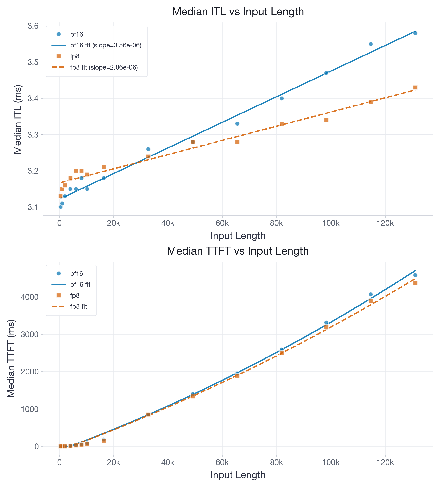
For gpt-oss-20b on B200, the fitted ITL slope drops from 3.56e-06
to 2.06e-06
ms/token and the intercept changes from 3.15
to 3.17
ms, yielding break-even at roughly 13k tokens from the fit. Unlike on
H100, these B200 benchmarks only compare BF16 vs FP8 (no skip-SW
variant), as at the time of running the experiments, layer skipping was
not yet supported for B200.
Accuracy Benchmarking
We focus on the following models: Llama-3.3-70B-Instruct, Qwen3-30B-A3B-Instruct-2507, Qwen3-30B-A3B-Thinking-2507, and Qwen3.5-27B.
For long-context (prefill-heavy) evaluation, we use the openai/mrcr
task, testing sequence lengths up to 1M. We report the average pass@1
score for each sequence-length bucket over 5 repetitions, and the
Area-Under-Curve (AUC) as an aggregate metric across all tested lengths
(Context Arena).
For reasoning (decode-heavy) evaluation, we use AIME25, GPQA:Diamond, MATH500, and LiveCodeBench-v6. We report the average pass@1 score: over 10 repetitions for AIME25 and LiveCodeBench-v6, and over 5 repetitions for GPQA:Diamond and MATH500.
All evaluations adopt the default non-greedy sampling parameters suggested by model creators to mimic real-world deployment.
Important: All evaluations use per-tensor
uncalibrated quantization scales (i.e., scale = 1.0). This is the
simplest possible configuration — no calibration data, no per-head
tuning — and represents the worst-case scenario for accuracy. We chose
this setup for two reasons: 1) it is trivially reproducible by any vLLM
user via --kv-cache-dtype fp8;
and 2) it establishes a lower bound — results with calibrated scales
will only be better. However, we also support calibration of
quantization scales on target data and higher granularity of scales
(per-attention-head instead of per-tensor). For more details on these
features, please see the following sections.
Reasoning Evaluations
Figure 7 compares two versions of Qwen3-30B-A3B-Thinking-2507 — the original BF16 model and its FP8 weight-and-activation quantized variant — on reasoning benchmarks that feature short prefills followed by long decode-heavy generations, often reaching tens of thousands of tokens. These benchmarks test whether FP8 KV-cache and attention quantization degrade reasoning ability across extended generation chains.
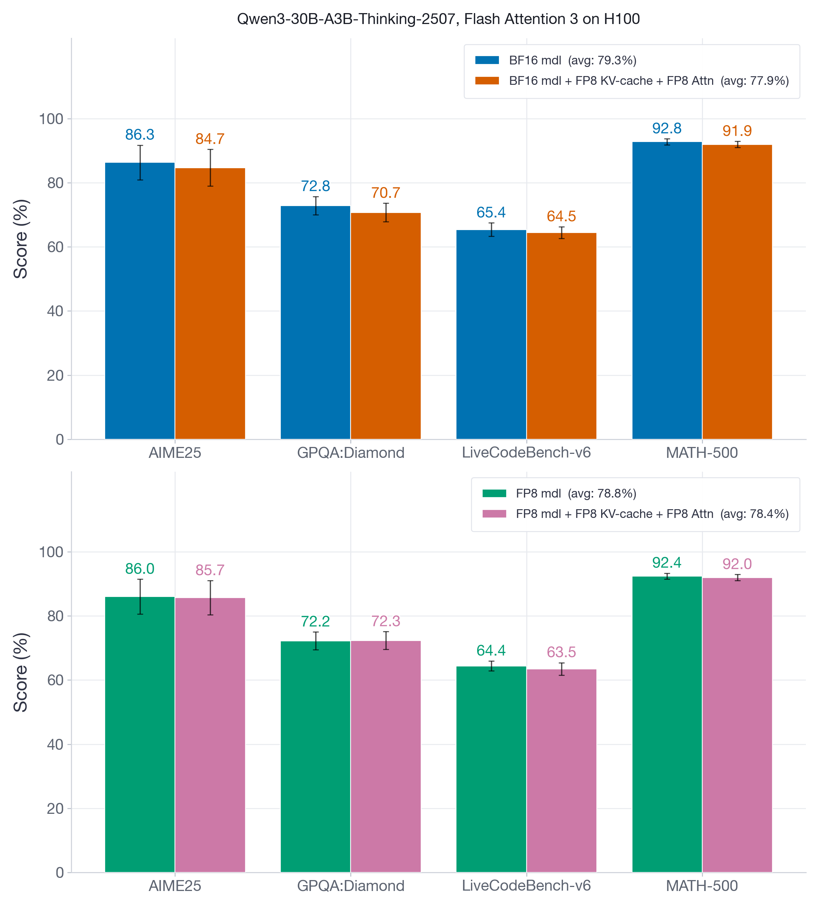
FP8 KV-cache and attention quantization introduces at most 1-2 points of accuracy degradation, with the lowest recovery at 97% (GPQA:Diamond, BF16 model).
In Figure 8, we report the same set of benchmarks for the decoder-only Qwen3.5-27B model, using both BF16 and FP8 weight-and-activation configurations.
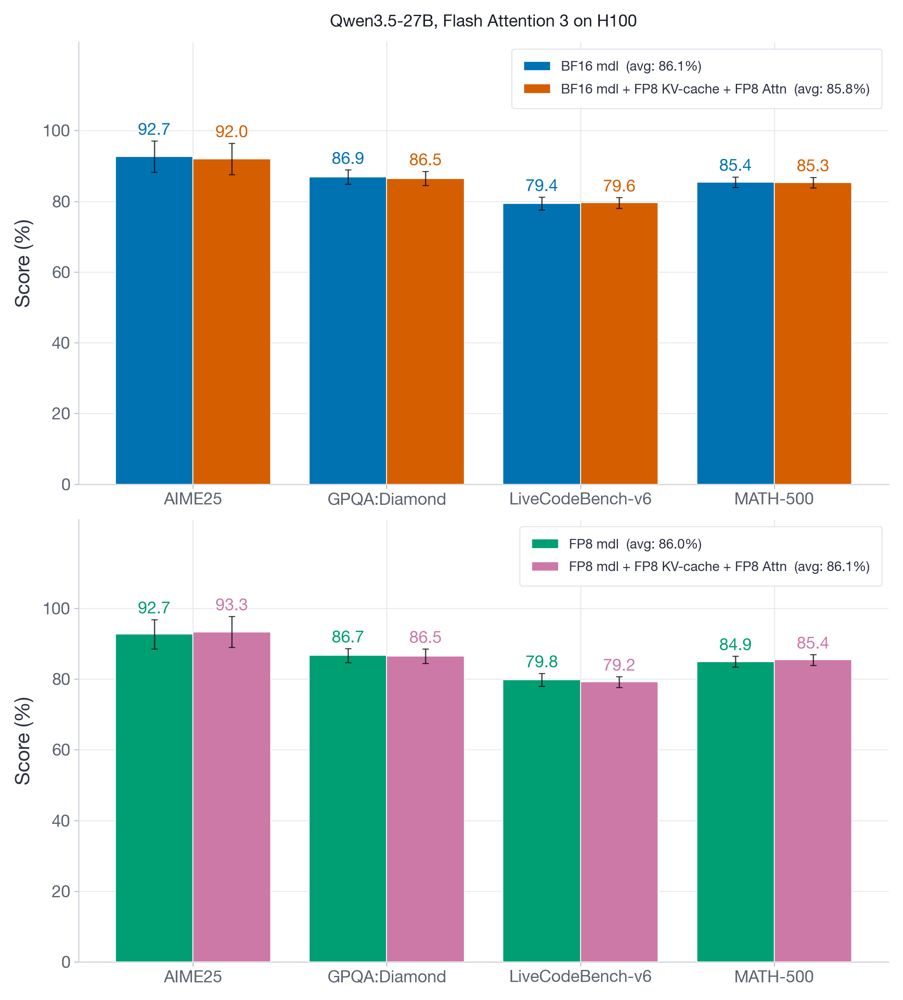
FP8 KV-cache and attention quantization shows negligible accuracy impact (at most 0.7 points), with the lowest recovery at 99% on AIME25 for the BF16 model.
Long-Context Evaluations
We evaluate using the openai/mrcr
long-context dataset, characterized by heavy prefill (long-context)
followed by short decoding. This validates that FP8 KV-cache and
attention quantization maintain model abilities even up to 1M token
prompts.
Figure 9 depicts the accuracy of Llama-3.3-70B-Instruct (unquantized BF16) and its weight-and-activation FP8 quantized variant across sequence-length buckets from 8k up to the model's maximum input length of 128k.
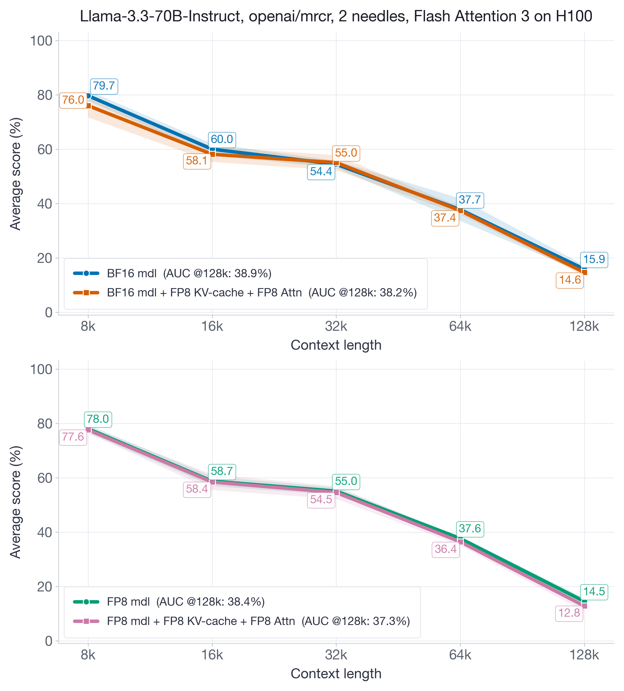
FP8 KV-cache and attention quantization recovers 97-98% of the baseline AUC@128k score.
In Figure 10 we focus on an MoE model, Qwen3-30B-A3B-Instruct-2507.
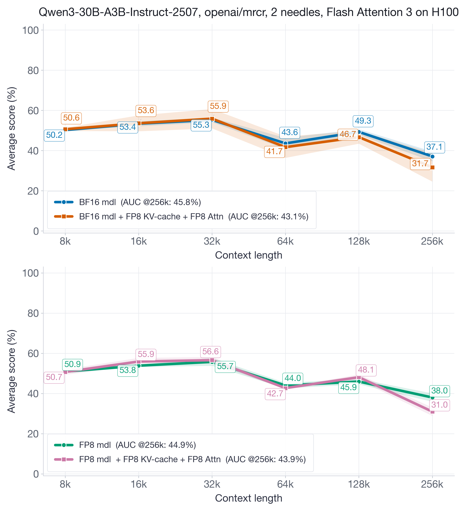
Despite higher score variance across all buckets (as shown in both figures), the overall AUC@256k metric remains close to baseline, with recovery ranging from roughly 94% to 98% depending on whether the underlying model weights and activations are BF16 or FP8. The increased variance is attributed to the baseline model's slightly unstable behavior (e.g., accuracy at 32k > accuracy at 8k/16k; accuracy at 128k > accuracy at 64k).
Finally, we focus on the very recent Qwen3.5-27B model, which supports input sequence lengths up to 1M tokens and demonstrates very competitive accuracy across all considered sequence lengths.
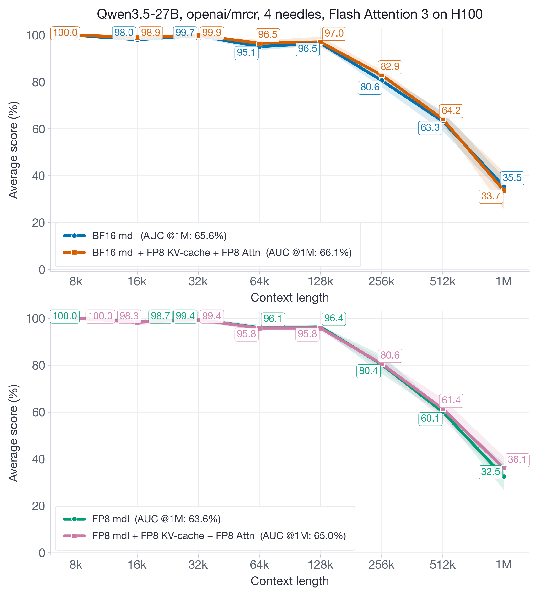
Figure 11 shows that even at the extreme of 1M tokens on a strong baseline model, FP8 KV-cache and attention quantization fully recovers the aggregated AUC@1M metric.
Accuracy with FlashInfer on Blackwell (B200) GPUs
We also examine FP8 KV-cache and attention quantization on the newer Blackwell architecture. Unlike Hopper, which required interventions like two-stage accumulation for precision with the Flash Attention kernel, Blackwell utilizes the default FlashInfer kernel, eliminating these precision issues. We replicate the exact Hopper experiments: Qwen3-30B-A3B-Instruct-2507 (BF16/FP8) on the openai/mrcr long-context benchmark, and Qwen3-30B-A3B-Thinking-2507 (BF16/FP8) on reasoning benchmarks. Results are in Figures 12 and 13.
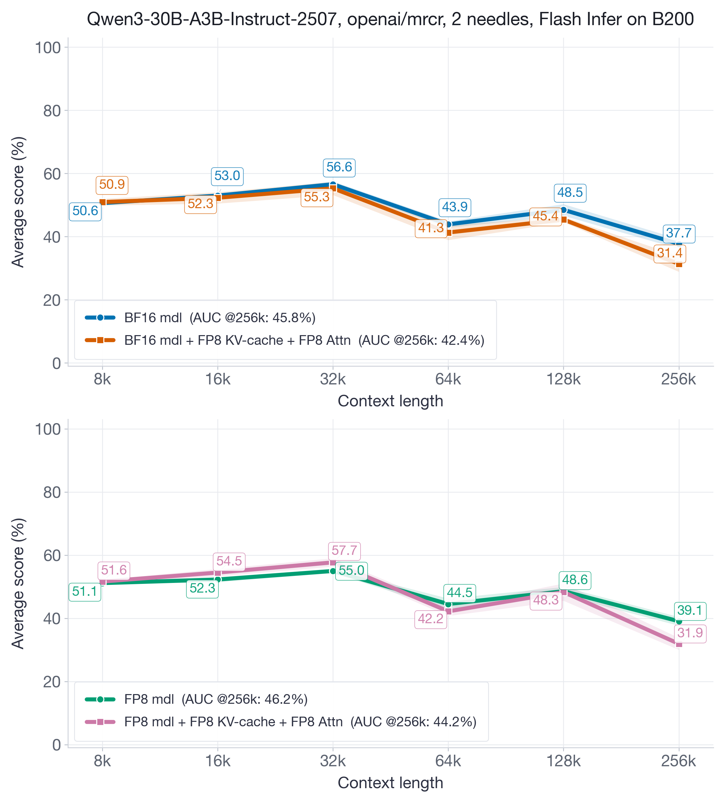
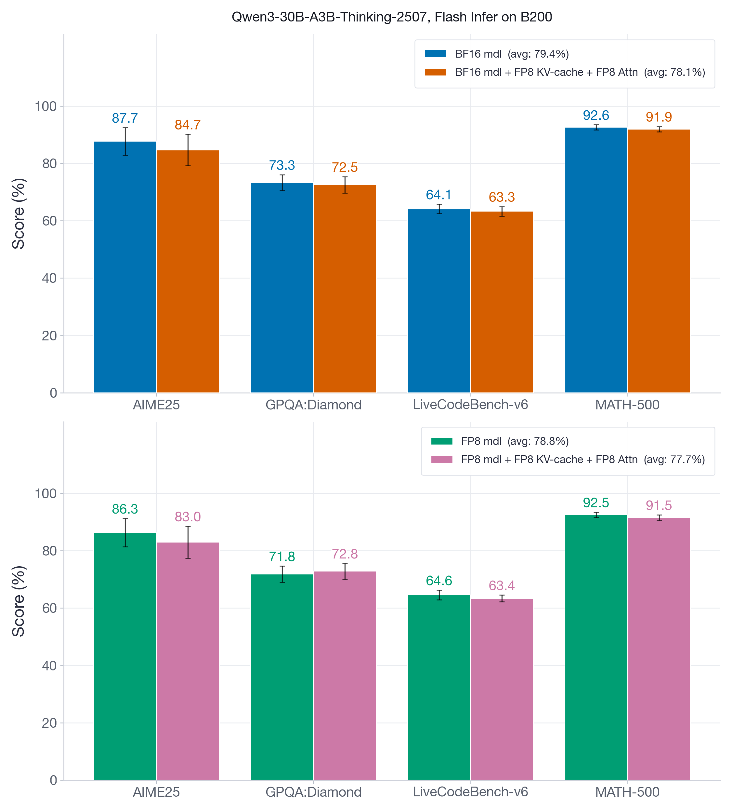
On B200 GPUs with the FlashInfer backend, FP8 KV-cache plus FP8 attention remains competitive in accuracy while preserving the same core systems benefit: a much smaller KV cache and lower decode cost. In our results, the accuracy match is still strong, though not uniformly as tight as on the best Hopper/FA3 cases.
Final Remarks
Our main conclusion is that FP8 KV-cache quantization is now ready to
be the default starting point for many long-context vLLM deployments and
hardware environments. If your workload is decode-heavy and
memory-bound, FP8 can deliver meaningful latency and capacity gains with
small or negligible accuracy loss. The main exceptions are workloads
where prefill dominates on head_dim = 256,
hybrid models whose small sliding-window layers should be left in BF16,
and models or backends that show persistent uncalibrated accuracy loss,
where calibration remains important.
While our primary focus here is the simplest (uncalibrated scale)
configuration, we have also implemented two additional features for
better accuracy recovery in niche deployments: 1) enabling scale
calibration using a user-provided dataset via vllm-project/LLM-Compressor,
and 2) supporting more granular per-attention-head quantization scales.
For detailed examples, refer to the vLLM examples.
When Should You Use Calibration?
Not all models work well with uncalibrated FP8 scales. To illustrate this, we tested the Kimi-K2.5 model — which uses the Flash MLA attention backend, a different kernel path than the models above — with uncalibrated FP8 KV-cache quantization on H200 GPUs.
Figure 14 shows a consistent downward shift across sequence-length buckets. While the aggregate AUC drop is modest and the standard error bands overlap, the degradation is systematic rather than random. Practical takeaway: start with uncalibrated FP8 because it is simple and often good enough, but calibrate if you observe this kind of persistent downward shift on your real workload rather than just isolated noisy buckets. This is especially relevant for models using non-standard attention backends (e.g., FlashMLA) where the FP8 kernel behavior may differ from the well-validated FA3 and FlashInfer paths.
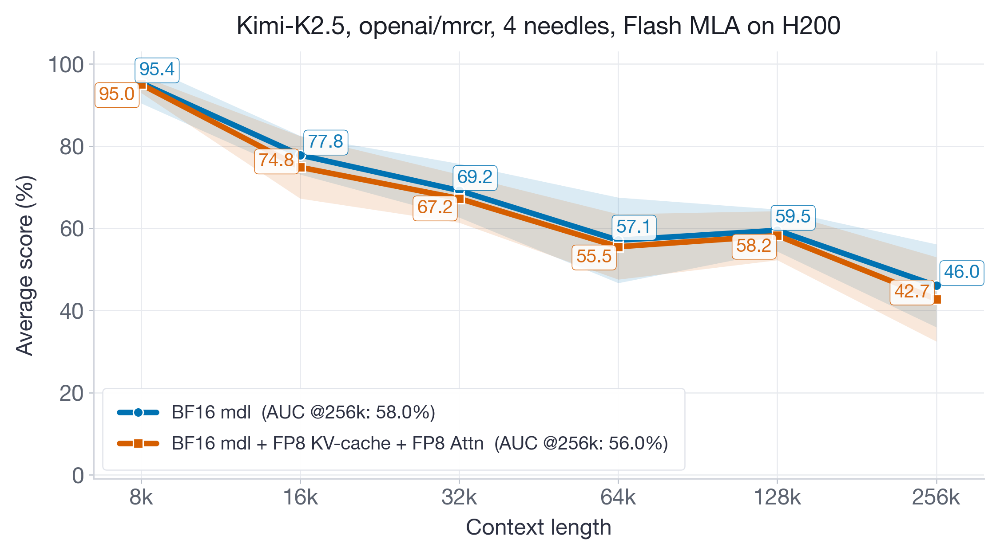
When to Avoid FP8 KV-Cache
FP8 KV-cache quantization is not always the right choice. Consider staying with BF16 if:
- Your contexts are short (< ~7k tokens): FP8 has a small constant overhead (the intercept gap), so at short contexts BF16 may be slightly faster for ITL.
- Your model uses
head_dim = 256and prefill latency matters: The two-level accumulation overhead increases TTFT by ~1.6x at long contexts. Disabling two-level accumulation recovers speed but requires careful accuracy validation. - Uncalibrated accuracy drops below 95% on your workload: Some models (e.g., Kimi-K2.5 with FlashMLA) show consistent degradation with uncalibrated scales, and might benefit from calibration on the target dataset.
- Your model has many small sliding-window attention
layers: FP8 overhead may not amortize well there; for
hybrid-attention models, prefer
--kv-cache-dtype-skip-layers sliding_window.